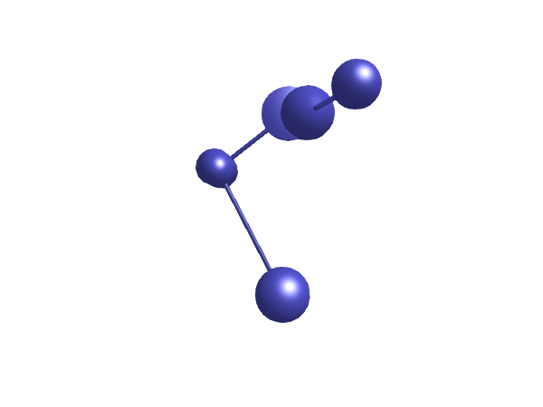

Multibody
Documentation for Multibody.

Welcome to the world of Multibody.jl, a powerful and flexible component of JuliaSim designed to model, analyze, and simulate multibody systems in Julia. As a state-of-the-art tool, Multibody.jl enables users to efficiently study the dynamics of complex mechanical systems in various fields, such as robotics, biomechanics, aerospace, and vehicle dynamics.
Built on top of the Julia language and the JuliaSim suite of tools for modeling, simulation, optimization and control, Multibody.jl harnesses the power of Julia's high-performance computing capabilities, making it a go-to choice for both researchers and engineers who require fast simulations and real-time performance. With an intuitive syntax and a comprehensive set of features, this package seamlessly integrates with other Julia and JuliaSim libraries, enabling users to tackle diverse and sophisticated problems in multibody dynamics.
In this documentation, you will find everything you need to get started with Multibody.jl, from basic component descriptions to detailed examples showcasing the package's capabilities. As you explore this documentation, you'll learn how to create complex models, work with forces and torques, simulate various types of motions, and visualize your results in both 2D and 3D. Whether you are a seasoned researcher or a newcomer to the field, Multibody.jl will empower you to bring your ideas to life and unlock new possibilities in the fascinating world of multibody dynamics.
Example overview
The following animations give a quick overview of simple mechanisms that can be modeled using Multibody.jl. The examples are ordered from simple at the top, to more advanced at the bottom. Please browse the examples for even more examples!


Notable differences from Modelica
- The torque variable in Multibody.jl is typically called
taurather thantto not conflict with the often used independent variabletused to denote time. - Multibody.jl occasionally requires the user to specify which component should act as the root of the kinematic tree. This only occurs when bodies are connected directly to force components without a joint parallel to the force component.
- In Multibody.jl, the orientation object of a
Frameis accessed using the functionori. - Quaternions in Multibody.jl follow the order $[s, i, j, k]$, i.e., scalar/real part first.
Index
Multibody.BodyBoxMultibody.BodyCylinderMultibody.PlanarMultibody.worldMultibody.RotationMatrixMultibody.AccSensorMultibody.AxisControlBusMultibody.AxisType2Multibody.BasicTorqueMultibody.BodyMultibody.BodyShapeMultibody.CutForceMultibody.CutTorqueMultibody.DamperMultibody.FixedRotationMultibody.FixedTranslationMultibody.ForceMultibody.FrameMultibody.FreeMotionMultibody.GearConstraintMultibody.Kinematic5Multibody.KinematicPTPMultibody.NumRotationMatrixMultibody.PartialCutForceBaseSensorMultibody.PathPlanning1Multibody.PathToAxisControlBusMultibody.PowerMultibody.PrismaticMultibody.RealPassThroughMultibody.RevoluteMultibody.RevolutePlanarLoopConstraintMultibody.RopeMultibody.SphericalMultibody.SphericalConstraintMultibody.SphericalSphericalMultibody.SpringMultibody.SpringDamperParallelMultibody.TorqueMultibody.UniversalMultibody.UniversalSphericalMultibody.WorldMultibody.WorldForceMultibody.WorldTorqueMultibody.absolute_rotationMultibody.axes_rotationsMultibody.axis_rotationMultibody.connect_orientationMultibody.get_frameMultibody.get_rotMultibody.get_transMultibody.get_wMultibody.gravity_accelerationMultibody.oriMultibody.planar_rotationMultibody.point_to_pointMultibody.renderMultibody.render!Multibody.resolve1Multibody.resolve2Multibody.traj5
Frames
Multibody.Frame — FunctionFrame(; name)Frame is the fundamental 3D connector in the multibody library. Most components have one or several Frame connectors that can be connected together.
The Frame connector has internal variables for
r_0: The position vector from the world frame to the frame origin, resolved in the world framef: The cut force resolved in the connector frametau: The cut torque resolved in the connector frame- Depending on usage, also rotation and rotational velocity variables.
Joints
A joint restricts the number of degrees of freedom (DOF) of a body. For example, a free floating body has 6 DOF, but if it is attached to a Revolute joint, the joint restricts all but one rotational degree of freedom (a revolute joint acts like a hinge). Similarily, a Prismatic joint restricts all but one translational degree of freedom (a prismatic joint acts like a slider).
A Spherical joints restricts all translational degrees of freedom, but allows all rotational degrees of freedom. It thus transmits no torque. A Planar joint moves in a plane, i.e., it restricts one translational DOF and two rotational DOF. A Universal joint has two rotational DOF.
Some joints offer the option to add 1-dimensional components to them by providing the keyword axisflange = true. This allows us to add, e.g., springs, dampers, sensors, and actuators to the joint.
Multibody.Planar — ConstantPlanar(; n = [0,0,1], n_x = [1,0,0], cylinderlength = 0.1, cylinderdiameter = 0.05, cylindercolor = [1, 0, 1, 1], boxwidth = 0.3*cylinderdiameter, boxheight = boxwidth, boxcolor = [0, 0, 1, 1])Joint where frame_b can move in a plane and can rotate around an axis orthogonal to the plane. The plane is defined by vector n which is perpendicular to the plane and by vector n_x, which points in the direction of the x-axis of the plane. frame_a and frame_b coincide when s_x=prismatic_x.s=0, s_y=prismatic_y.s=0 and phi=revolute.phi=0.
Structural parameters
n: Axis orthogonal to unconstrained plane, resolved inframe_a(= same as inframe_b)n_x: Vector in direction of x-axis of plane, resolved inframe_a(n_xshall be orthogonal ton)
Connectors
frame_a: Frame for the jointframe_b: Frame for the joint
Variables
s_x: Relative distance along first prismatic joint starting atframe_as_y: Relative distance along second prismatic joint starting at first prismatic jointphi: Relative rotation angle fromframe_atoframe_bv_x: Relative velocity along first prismatic jointv_y: Relative velocity along second prismatic jointw: Relative angular velocity around revolute jointa_x: Relative acceleration along first prismatic jointa_y: Relative acceleration along second prismatic jointwd: Relative angular acceleration around revolute joint
Rendering parameters
cylinderlength: Length of the revolute cylindercylinderdiameter: Diameter of the revolute cylindercylindercolor: (structural) Color of the revolute cylinderboxwidth: Width of the prismatic joint boxesboxheight: Height of the prismatic joint boxesboxcolor: (structural) Color of the prismatic joint boxesradius: (structural) Radius of the revolute cylinder
Multibody.FreeMotion — MethodFreeMotion(; name, state = true, sequence, isroot = true, w_rel_a_fixed = false, z_rel_a_fixed = false, phi = 0, phid = 0, phidd = 0, w_rel_b = 0, r_rel_a = 0, v_rel_a = 0, a_rel_a = 0)Joint which does not constrain the motion between frame_a and frame_b. Such a joint is only meaningful if the relative distance and orientation between frame_a and frame_b, and their derivatives, shall be used as state.
Note, that bodies such as Body, BodyShape, have potential state variables describing the distance and orientation, and their derivatives, between the world frame and a body fixed frame. Therefore, if these potential state variables are suited, a FreeMotion joint is not needed.
The state of the FreeMotion object consits of:
The relative position vector r_rel_a from the origin of frame_a to the origin of frame_b, resolved in frame_a and the relative velocity v_rel_a of the origin of frame_b with respect to the origin of frame_a, resolved in frame_a (= D(r_rel_a)).
Arguments
state: Enforce this joint having state, this is often desired and is the default choice.sequence: Rotation sequence, defaults to[1, 2, 3]w_rel_a_fixed: = true, ifw_rel_a_startare used as initial values, else as guess valuesz_rel_a_fixed: = true, ifz_rel_a_startare used as initial values, else as guess values
Initial condition arguments:
phiphidphiddw_rel_br_rel_av_rel_aa_rel_a
Multibody.GearConstraint — MethodGearConstraint(; name, ratio, checkTotalPower = false, n_a, n_b, r_a, r_b)This ideal massless joint provides a gear constraint between frames frame_a and frame_b. The axes of rotation of frame_a and frame_b may be arbitrary.
ratio: Gear ration_a: Axis of rotation offrame_an_b: Axis of rotation offrame_br_a: Vector from framebearingtoframe_aresolved in bearingr_b: Vector from framebearingtoframe_bresolved in bearing
Multibody.Prismatic — MethodPrismatic(; name, n = [0, 0, 1], axisflange = false)Prismatic joint with 1 translational degree-of-freedom
n: The axis of motion (unit vector)axisflange: If true, the joint will have two additional frames from Mechanical.Translational,axisandsupport, between which translational components such as springs and dampers can be connected.
If axisflange, flange connectors for ModelicaStandardLibrary.Mechanics.TranslationalModelica are also available:
axis: 1-dim. translational flange that drives the jointsupport: 1-dim. translational flange of the drive support (assumed to be fixed in the world frame, NOT in the joint)
The function returns an ODESystem representing the prismatic joint.
Multibody.Revolute — MethodRevolute(; name, phi0 = 0, w0 = 0, n, axisflange = false)Revolute joint with 1 rotational degree-of-freedom
phi0: Initial anglew0: Iniitial angular velocityn: The axis of rotationaxisflange: If true, the joint will have two additional frames from Mechanical.Rotational,axisandsupport, between which rotational components such as springs and dampers can be connected.
If axisflange, flange connectors for ModelicaStandardLibrary.Mechanics.Rotational are also available:
axis: 1-dim. rotational flange that drives the jointsupport: 1-dim. rotational flange of the drive support (assumed to be fixed in the world frame, NOT in the joint)
Rendering options
radius = 0.05: Radius of the joint in animationslength = radius: Length of the joint in animationscolor: Color of the joint in animations, a vector of length 4 with values between [0, 1] providing RGBA values
Multibody.RevolutePlanarLoopConstraint — MethodRevolutePlanarLoopConstraint(; name, n)Revolute joint that is described by 2 positional constraints for usage in a planar loop (the ambiguous cut-force perpendicular to the loop and the ambiguous cut-torques are set arbitrarily to zero)
Joint where frame_b rotates around axis n which is fixed in frame_a and where this joint is used in a planar loop providing 2 constraint equations on position level.
If a planar loop is present, e.g., consisting of 4 revolute joints where the joint axes are all parallel to each other, then there is no unique mathematical solution if all revolute joints are modelled with Revolute and the symbolic algorithms will fail. The reason is that, e.g., the cut-forces in the revolute joints perpendicular to the planar loop are not uniquely defined when 3-dim. descriptions of revolute joints are used. Usually, an error message will be printed pointing out this situation. In this case, one revolute joint in the loop has to be replaced by model RevolutePlanarLoopCutJoint. The effect is that from the 5 constraints of a 3-dim. revolute joint, 3 constraints are removed and replaced by appropriate known variables (e.g., the force in the direction of the axis of rotation is treated as known with value equal to zero; for standard revolute joints, this force is an unknown quantity).
Multibody.Spherical — MethodSpherical(; name, state = false, isroot = true, w_rel_a_fixed = false, z_rel_a_fixed = false, sequence, phi = 0, phid = 0, phidd = 0, d = 0)Joint with 3 constraints that define that the origin of frame_a and the origin of frame_b coincide. By default this joint defines only the 3 constraints without any potential state variables. If parameter state is set to true, three states are introduced. The orientation of frame_b is computed by rotating frame_a along the axes defined in parameter vector sequence (default = [1,2,3], i.e., the Cardan angle sequence) around the angles used as state. If angles are used as state there is the slight disadvantage that a singular configuration is present leading to a division by zero.
isroot: Indicate thatframe_ais the root, otherwiseframe_bis the root. Only relevant ifstate = true.sequence: Rotation sequenced: Viscous damping constant. Ifd > 0. the joint dissipates energy due to viscous damping according to $τ ~ -d*ω$.
Rendering options
radius = 0.1: Radius of the joint in animationscolor = [1,1,0,1]: Color of the joint in animations, a vector of length 4 with values between [0, 1] providing RGBA values
Multibody.SphericalConstraint — MethodSphericalConstraint(; name, color = [1, 1, 0, 1], radius = 0.1, x_locked = true, y_locked = true, z_locked = true)Spherical cut joint and translational directions may be constrained or released
This model does not use explicit variables e.g. state variables in order to describe the relative motion of frame_b with to respect to frame_a, but defines kinematic constraints between the frame_a and frame_b. The forces and torques at both frames are then evaluated in such a way that the constraints are satisfied. Sometimes this type of formulation is also called an implicit joint in literature.
As a consequence of the formulation the relative kinematics between frame_a and frame_b cannot be initialized.
In complex multibody systems with closed loops this may help to simplify the system of non-linear equations. Please compare state realization chosen by structural_simplify using the classical joint formulation and the alternative formulation used here in order to check whether this fact applies to the particular system under consideration. In systems without closed loops the use of this implicit joint is not recommended.
Arguments
x_locked: Set to false if the translational motion in x-direction shall be freey_locked: Set to false if the translational motion in y-direction shall be freez_locked: Set to false if the translational motion in z-direction shall be free
Rendering parameters
color: Color of the joint in animations (RGBA)radius: Radius of the joint in animations
Multibody.SphericalSpherical — MethodSphericalSpherical(; name, state = false, isroot = true, iscut=false, w_rel_a_fixed = false, r_0 = [0,0,0], color = [1, 1, 0, 1], m = 0, radius = 0.1, kinematic_constraint=true)Joint that has a spherical joint on each of its two ends. The rod connecting the two spherical joints is approximated by a point mass that is located in the middle of the rod. When the mass is set to zero (default), special code for a massless body is generated.
This joint introduces one constraint defining that the distance between the origin of frame_a and the origin of frame_b is constant (= rodLength). It is highly recommended to use this joint in loops whenever possible, because this enhances the efficiency considerably due to smaller systems of non-linear algebraic equations.
It is not possible to connect other components, such as a body with mass properties or a special visual shape object to the rod connecting the two spherical joints. If this is needed, use instead joint UniversalSpherical that has the additional frame frame_ia for this.
Connectors:
frame_a: Frame for the first spherical jointframe_b: Frame for the second spherical joint
Rendering parameters:
radius: Radius of the joint in animationscolor: Color of the joint in animations (RGBA)
Multibody.Universal — MethodUniversal(; name, n_a, n_b, phi_a = 0, phi_b = 0, w_a = 0, w_b = 0, a_a = 0, a_b = 0, state_priority=10)Joint where frame_a rotates around axis n_a which is fixed in frame_a and frame_b rotates around axis n_b which is fixed in frame_b. The two frames coincide when revolute_a.phi=0 and revolute_b.phi=0. This joint has the following potential states;
- The relative angle
phi_a = revolute_a.phi[rad] around axisn_a - the relative angle
phi_b = revolute_b.phi[rad] around axisn_b - the relative angular velocity
w_a = D(phi_a) - the relative angular velocity
w_b = D(phi_b)
Multibody.UniversalSpherical — MethodUniversalSpherical(; name, n1_a, rRod_ia, sphere_diameter = 0.1, sphere_color, rod_width = 0.1, rod_height = 0.1, rod_color, cylinder_length = 0.1, cylinder_diameter = 0.1, cylinder_color, kinematic_constraint = true)Universal - spherical joint aggregation (1 constraint, no potential states)
This component consists of a universal joint at frame_a and a spherical joint at frame_b that are connected together with a rigid rod.
This joint aggregation has no mass and no inertia and introduces the constraint that the distance between the origin of frame_a and the origin of frame_b is constant (= length(rRod_ia)). The universal joint is defined in the following way:
- The rotation axis of revolute joint 1 is along parameter vector
n1_awhich is fixed inframe_a. - The rotation axis of revolute joint 2 is perpendicular to axis 1 and to the line connecting the universal and the spherical joint.
Note, there is a singularity when axis 1 and the connecting rod are parallel to each other. Therefore, if possible n1_a should be selected in such a way that it is perpendicular to rRod_ia in the initial configuration (i.e., the distance to the singularity is as large as possible).
An additional frame_ia is present. It is fixed in the connecting rod at the origin of frame_a. The placement of frame_ia on the rod is implicitly defined by the universal joint (framea and `frameiacoincide when the angles of the two revolute joints of the universal joint are zero) and by parameter vectorrRodia, the position vector from the origin offrameato the origin offrameb, resolved inframeia`.
This joint aggregation can be used in cases where in reality a rod with spherical joints at end are present. Such a system has an additional degree of freedom to rotate the rod along its axis. In practice this rotation is usually of no interest and is mathematically removed by replacing one of the spherical joints by a universal joint. Still, in most cases the SphericalSpherical joint aggregation can be used instead of the UniversalSpherical joint since the rod is animated and its mass properties are approximated by a point mass in the middle of the rod. The SphericalSpherical joint has the advantage that it does not have a singular configuration.
Arguments
n1_aAxis 1 of universal joint resolved in frame_a (axis 2 is orthogonal to axis 1 and to rod)rRod_iaVector from origin of framea to origin of frameb, resolved inframe_ia(if computeRodLength=true, rRod_ia is only an axis vector along the connecting rod)kinematic_constraint = trueSet to false if no constraint shall be defined, due to analytically solving a kinematic loop
Connectors
frame_a: Frame for the universal jointframe_b: Frame for the spherical jointframe_ia: Frame fixed in the rod at the origin offrame_a
Rendering parameters
sphere_diameter: Diameter of spheres representing the universal and the spherical jointsphere_color: Color of spheres representing the universal and the spherical joint (RGBA)rod_width: Width of rod shape in direction of axis 2 of universal jointrod_height: Height of rod shape in direction that is orthogonal to rod and to axis 2rod_color: Color of rod shape connecting the universal and the spherical joints (RGBA)cylinder_length: Length of cylinders representing the two universal joint axescylinder_diameter: Diameter of cylinders representing the two universal joint axescylinder_color: Color of cylinders representing the two universal joint axes (RGBA)
Components
The perhaps most fundamental component is a Body, this component has a single flange, frame_a, which is used to connect the body to other components. This component has a mass, a vector r_cm from frame_a to the center of mass, and a moment of inertia tensor I in the center of mass. The body can be thought of as a point mass with a moment of inertia tensor.
A mass with a shape can be modeled using a BodyShape. The primary difference between a Body and a BodyShape is that the latter has an additional flange, frame_b, which is used to connect the body to other components. The translation between flange_a and flange_b is determined by the vector r. The BodyShape is suitable to model, e.g., cylinders, rods, and boxes.
A rod without a mass (just a translation), is modeled using FixedTranslation.
Multibody.BodyBox — ConstantBodyBox(; name, m = 1, r = [1, 0, 0], r_shape = [0, 0, 0], width_dir = [0,1,0])Rigid body with box shape. The mass properties of the body (mass, center of mass, inertia tensor) are computed from the box data. Optionally, the box may be hollow. The (outer) box shape is used in the animation, the hollow part is not shown in the animation. The two connector frames frame_a and frame_b are always parallel to each other.
Parameters
r: (structural parameter) Vector fromframe_atoframe_bresolved inframe_ar_shape: (structural parameter) Vector fromframe_ato box origin, resolved inframe_awidth_dir: (structural parameter) Vector in width direction of box, resolved inframe_alength_dir: (structural parameter) Vector in length direction of box, resolved inframe_alength: (structural parameter) Length of boxwidth = 0.3length: Width of boxheight = width: Height of boxinner_width: Width of inner box surface (0 <= inner_width <= width)inner_height: Height of inner box surface (0 <= inner_height <= height)density = 7700: Density of cylinder (e.g., steel: 7700 .. 7900, wood : 400 .. 800)color: Color of box in animations
Multibody.BodyCylinder — ConstantBodyCylinder(; name, m = 1, r = [0.1, 0, 0], r_shape = [0, 0, 0], dir = r - r_shape, length = _norm(r - r_shape), diameter = 1, inner_diameter = 0, density = 7700, color = purple)Rigid body with cylinder shape. The mass properties of the body (mass, center of mass, inertia tensor) are computed from the cylinder data. Optionally, the cylinder may be hollow. The two connector frames frame_a and frame_b are always parallel to each other.
Parameters
r: (Structural parameter) Vector fromframe_atoframe_bresolved inframe_ar_shape: (Structural parameter) Vector fromframe_ato cylinder origin, resolved inframe_adir: Vector in length direction of cylinder, resolved inframe_alength: Length of cylinderdiameter: Diameter of cylinderinner_diameter: Inner diameter of cylinder (0 <= inner_diameter <= diameter)density: Density of cylinder kg/m³color: Color of cylinder in animations
Variables
r_0: Position vector from origin of world frame to origin offrame_av_0: Absolute velocity offrame_a, resolved in world frame (= D(r_0))a_0: Absolute acceleration offrame_aresolved in world frame (= D(v_0))
Multibody.world — ConstantThe world component is the root of all multibody models. It is a fixed frame with a parallel gravitational field and a gravity vector specified by the unit direction world.n (defaults to [0, -1, 0]) and magnitude world.g (defaults to 9.80665).
Multibody.AccSensor — MethodAccSensor(;name)Ideal sensor to measure the absolute flange angular acceleration
Connectors:
flange: Flange Flange of shaft from which sensor information shall be measureda: RealOutput Absolute angular acceleration of flange
Multibody.AxisControlBus — Method@connector AxisControlBus(; name)motion_ref(t) = 0: = true, if reference motion is not in restangle_ref(t) = 0: Reference angle of axis flangeangle(t) = 0: Angle of axis flangespeed_ref(t) = 0: Reference speed of axis flangespeed(t) = 0: Speed of axis flangeacceleration_ref(t) = 0: Reference acceleration of axis flangeacceleration(t) = 0: Acceleration of axis flangecurrent_ref(t) = 0: Reference current of motorcurrent(t) = 0: Current of motormotorAngle(t) = 0: Angle of motor flangemotorSpeed(t) = 0: Speed of motor flange
Multibody.AxisType2 — MethodAxisType2(; name)Axis model of the r3 joints 4,5,6
Multibody.Body — MethodBody(; name, m = 1, r_cm, isroot = false, phi0 = zeros(3), phid0 = zeros(3), r_0 = zeros(3), state_priority = 2, quat = false, sparse_I = false)Representing a body with 3 translational and 3 rotational degrees-of-freedom.
This component has a single frame, frame_a. To represent bodies with more than one frame, see BodyShape, BodyCylinder, BodyBox.
Performance optimization
sparse_I: Iftrue, the zero elements of the inerita matrix are considered "structurally zero", and this fact is used to optimize performance. When this option is enabled, the elements of the inertia matrix that were zero when the component was created cannot changed without reinstantiating the component. This performance optimization may be useful, e.g., when the inertia matrix is known to be diagonal.
Parameters
m: Massr_cm: Vector fromframe_ato center of mass, resolved inframe_aI_11, I_22, I_33, I_21, I_31, I_32: Inertia-matrix elementsisroot: Indicate whether this component is the root of the system, useful when there are no joints in the model.phi0: Initial orientation, only applicable ifisroot = trueandquat = falsephid0: Initial angular velocity
Variables
r_0: Position vector from origin of world frame to origin offrame_av_0: Absolute velocity offrame_a, resolved in world frame (= D(r_0))a_0: Absolute acceleration offrame_aresolved in world frame (= D(v_0))
Rendering options
radius: Radius of the joint in animationscylinder_radius: Radius of the cylinder from frame to COM in animations (only drawn ifr_cmis non-zero). Defaults toradius/2color: Color of the joint in animations, a vector of length 4 with values between [0, 1] providing RGBA values
Multibody.BodyShape — MethodBodyShape(; name, m = 1, r, kwargs...)The BodyShape component is similar to a Body, but it has two frames and a vector r that describes the translation between them, while the body has a single frame only.
r: Vector fromframe_atoframe_bresolved inframe_a- All
kwargsare passed to the internalBodycomponent. shapefile: A path::String to a CAD model that can be imported by MeshIO for 3D rendering. If none is provided, a cylinder shape is rendered.
See also BodyCylinder and BodyBox for body components with predefined shapes and automatically computed inertial properties based on geometry and density.
Multibody.FixedRotation — MethodFixedRotation(; name, r, n, sequence, isroot = false, angle)Fixed translation followed by a fixed rotation of frame_b with respect to frame_a
r: Translation vectorn: Axis of rotation, resolved in frame_aangle: Angle of rotation aroundn, given in radians
To obtain an axis-angle representation of any rotation, see Conversion between orientation formats
Multibody.FixedTranslation — MethodFixedTranslation(; name, r)Fixed translation of frame_b with respect to frame_a with position vector r resolved in frame_a.
Can be thought of as a massless rod. For a massive rod, see BodyShape or BodyCylinder.
Multibody.Rope — MethodRope(; name, l = 1, n = 10, m = 1, c = 0, d = 0, kwargs)Model a rope (string / cable) of length l and mass m.
The rope is modeled as a series of n links, each connected by a Spherical joint. The links are either fixed in length (default, modeled using BodyShape) or flexible, in which case they are modeled as a Translational.Spring and Translational.Damper in parallel with a Prismatic joint with a Body adding mass to the center of the link segment. The flexibility is controlled by the parameters c and d, which are the stiffness and damping coefficients of the spring and damper, respectively. The default values are c = 0 and d = 0, which corresponds to a stiff rope.
l: Unstretched length of ropen: Number of links used to model the rope. For accurate approximations to continuously flexible ropes, a large number may be required.m: The total mass of the rope. Each rope segment will have massm / n.c: The equivalent stiffness of the rope, i.e., the rope will act like a spring with stiffnessc.d: The equivalent damping in the stretching direction of the rope, i.e., the taught rope will act like a damper with dampingd.d_joint: Viscous damping in the joints between the links. A positive value makes the rope dissipate energy while flexing (as opposed to the dampingdwhich dissipats energy due to stretching).dir: A vector of norm 1 indicating the initial direction of the rope.
Damping
There are three different methods of adding damping to the rope:
- Damping in the stretching direction of the rope, controlled by the parameter
d. - Damping in flexing of the rope, modeled as viscous friction in the joints between the links, controlled by the parameter
d_joint. - Air resistance to the rope moving through the air, controlled by the parameter
air_resistance. This damping is quadratic in the velocity ($f_d ~ -||v||v$) of each link relative to the world frame.
Rendering
color = [255, 219, 120, 255]./255radius = 0.05f0jointradius=0jointcolor=color
Multibody.World — MethodWorld(; name, render=true)Multibody.gravity_acceleration — MethodCompute the gravity acceleration, resolved in world frame
Multibody.ori — Functionori(frame, varw = false)Get the orientation of sys as a RotationMatrix object.
For frames, the orientation is stored in the metadata field of the system as sys.metadata[:orientation].
If varw = true, the angular velocity variables w of the frame is also included in the RotationMatrix object, otherwise w is derived as the time derivative of R. varw = true is primarily used when selecting a component as root.
Forces
Multibody.BasicTorque — MethodBasicTorque(; name, resolve_frame = :world)Low-level torque component used to build Torque
Multibody.Damper — MethodDamper(; d, name, kwargs)Linear damper acting as line force between frame_a and frame_b. A force f is exerted on the origin of frame_b and with opposite sign on the origin of frame_a along the line from the origin of frame_a to the origin of frame_b according to the equation:
\[f = d D(s)\]
where d is the (viscous) damping parameter, s is the distance between the origin of frame_a and the origin of frame_b and D(s) is the time derivative of s.
Arguments:
d: Damping coefficient
Rendering
radius = 0.1: Radius of damper when renderedlength_fraction = 0.2: Fraction of the length of the damper that is renderedcolor = [0.5, 0.5, 0.5, 1]: Color of the damper when rendered
See also SpringDamperParallel
Multibody.Force — MethodForce(; name, resolve_frame = :frame_b)Force acting between two frames, defined by 3 input signals and resolved in frame world, frame_a, frame_b (default)
Connectors:
frame_aframe_bforce: Of typeBlocks.RealInput(3). x-, y-, z-coordinates of force resolved in frame defined byresolve_frame.
Keyword arguments:
resolve_frame: The frame in which the cut force and cut torque are resolved. Default is:frame_b, options include:frame_aand:world.
Multibody.Spring — MethodSpring(; c, name, m = 0, lengthfraction = 0.5, s_unstretched = 0, kwargs)Linear spring acting as line force between frame_a and frame_b. A force f is exerted on the origin of frame_b and with opposite sign on the origin of frame_a along the line from the origin of frame_a to the origin of frame_b according to the equation:
\[f = c s\]
where c is the spring stiffness parameter, s is the distance between the origin of frame_a and the origin of frame_b.
Optionally, the mass of the spring is taken into account by a point mass located on the line between frame_a and frame_b (default: middle of the line). If the spring mass is zero, the additional equations to handle the mass are removed.
Arguments:
c: Spring stiffnessm: Mass of the spring (can be zero)lengthfraction: Location of spring mass with respect toframe_aas a fraction of the distance fromframe_atoframe_b(=0: atframe_a; =1: atframe_b)s_unstretched: Length of the spring when it is unstretchedkwargs: are passed toLineForceWithMass
Rendering
num_windings = 6: Number of windings of the coil when renderedcolor = [0,0,1,1]: Color of the spring when renderedradius = 0.1: Radius of spring when renderedN = 200: Number of points in mesh when rendered. Rendering time can be reduced somewhat by reducing this number.
See also SpringDamperParallel
Multibody.SpringDamperParallel — MethodSpringDamperParallel(; name, c, d, s_unstretched)Linear spring and linear damper in parallel acting as line force between frame_a and frame_b. A force f is exerted on the origin of frame_b and with opposite sign on the origin of frame_a along the line from the origin of frame_a to the origin of frame_b according to the equation:
\[f = c (s - s_{unstretched}) + d \cdot D(s)\]
where c, s_unstretched and d are parameters, s is the distance between the origin of frame_a and the origin of frame_b and D(s) is the time derivative of s.
Multibody.Torque — MethodTorque(; name, resolve_frame = :frame_b)Torque acting between two frames, defined by 3 input signals and resolved in frame world, frame_a, frame_b (default)
Connectors:
frame_aframe_btorque: Of typeBlocks.RealInput(3). x-, y-, z-coordinates of torque resolved in frame defined byresolve_frame.
Keyword arguments:
resolve_frame: The frame in which the cut force and cut torque are resolved. Default is:frame_b, options include:frame_aand:world.
Multibody.WorldForce — MethodWorldForce(; name, resolve_frame = :world)External force acting at frame_b, defined by 3 input signals and resolved in frame :world or :frame_b.
Connectors:
frame_b: Frame at which the force is actingforce: Of typeBlocks.RealInput(3). x-, y-, z-coordinates of force resolved in frame defined byresolve_frame.
Rendering options
scale = 0.1: scaling factor for the force [m/N]color = [0,1,0,0.5]: color of the force arrow in renderingradius = 0.05: radius of the force arrow in rendering
Multibody.WorldTorque — MethodWorldTorque(; name, resolve_frame = :world)External torque acting at frame_b, defined by 3 input signals and resolved in frame :world or :frame_b.
Connectors:
frame_b: Frame at which the torque is actingtorque: Of typeBlocks.RealInput(3). x-, y-, z-coordinates of torque resolved in frame defined byresolve_frame.
Rendering options
scale = 0.1: scaling factor for the force [m/N]color = [0,1,0,0.5]: color of the force arrow in renderingradius = 0.05: radius of the force arrow in rendering
Sensors
A sensor is an object that translates quantities in the mechanical domain into causal signals which can interact with causal components from ModelingToolkitStandardLibrary.Blocks, such as control systems etc.
Multibody.CutForce — MethodBasicCutForce(; name, resolve_frame)Basic sensor to measure cut force vector. Contains a connector of type Blocks.RealOutput with name force.
resolve_frame: The frame in which the cut force and cut torque are resolved. Default is:frame_a, options include:frame_aand:world.
Multibody.CutTorque — MethodCutTorque(; name, resolve_frame)Basic sensor to measure cut torque vector. Contains a connector of type Blocks.RealOutput with name torque.
resolve_frame: The frame in which the cut force and cut torque are resolved. Default is:frame_a, options include:frame_aand:world.
Multibody.PartialCutForceBaseSensor — MethodPartialCutForceBaseSensor(; name, resolve_frame = :frame_a)resolve_frame: The frame in which the cut force and cut torque are resolved. Default is:frame_a, options include:frame_aand:world.
Multibody.Power — MethodPower(; name)A sensor measuring mechanical power transmitted from frame_a to frame_b.
Connectors:
power of type RealOutput.
Orientation utilities
Multibody.RotationMatrix — TypeRotationMatrixA struct representing a 3D orientation as a rotation matrix.
If ODESystem is called on a RotationMatrix object o, symbolic variables for o.R and o.w are created and the value of o.R is used as the default value for the symbolic R.
Fields:
R::R3: The rotation 3×3 matrix ∈ SO(3)w: The angular velocity vector
Multibody.NumRotationMatrix — MethodNumRotationMatrix(; R = collect(1.0 * I(3)), w = zeros(3), name, varw = false)Create a new RotationMatrix struct with symbolic elements. R,w determine default values.
The primary difference between NumRotationMatrix and RotationMatrix is that the NumRotationMatrix constructor is used in the constructor of a Frame in order to introduce the frame variables, whereas RorationMatrix (the struct) only wraps existing variables.
varw: If true,wis a variable, otherwise it is derived from the derivative ofRasw = get_w(R).
Never call this function directly from a component constructor, instead call f = Frame(); R = ori(f) and add f to the subsystems.
Multibody.absolute_rotation — MethodR2 = absolute_rotation(R1, Rrel)R1:Orientationobject to rotate frame 0 into frame 1Rrel:Orientationobject to rotate frame 1 into frame 2R2:Orientationobject to rotate frame 0 into frame 2
Multibody.axes_rotations — Functionaxes_rotations(sequence, angles, der_angles; name = :R_ar)Generate a rotation matrix for a rotation around the specified axes (Euler/Cardan angles).
Multibody.axis_rotation — Methodaxis_rotation(sequence, angle; name = :R)Generate a rotation matrix for a rotation around the specified axis.
sequence: The axis to rotate around (1: x-axis, 2: y-axis, 3: z-axis)angle: The angle of rotation (in radians)
Returns a RotationMatrix object.
Multibody.connect_orientation — Methodconnect_orientation(R1,R2; iscut=false)Connect two rotation matrices together, optionally introducing a cut joint. A normal connection of two rotation matrices introduces 9 constraints, while a cut connection introduces 3 constraints only. This is useful to open kinematic loops, see Using cut joints (docs page) for an example where this is used.
Multibody.get_frame — MethodT_W_F = get_frame(sol, frame, t)Extract a 4×4 transformation matrix ∈ SE(3) from a solution at time t.
The transformation matrix returned, $T_W^F$, is such that when a homogenous-coordinate vector $p_F$, expressed in the local frame of reference $F$ is multiplied by $T_W^F$ as $Tp$, the resulting vector is $p_W$ expressed in the world frame:
\[p_W = T_W^F p_F\]
See also get_trans and get_rot, Orientations and directions (docs section).
Multibody.get_rot — MethodR_W_F = get_rot(sol, frame, t)Extract a 3×3 rotation matrix ∈ SO(3) from a solution at time t.
The rotation matrix returned, $R_W^F$, is such that when a vector $p_F$ expressed in the local frame of reference $F$ is multiplied by $R_W^F$ as $Rp$, the resulting vector is $p_W$ expressed in the world frame:
\[p_W = R_W^F p_F\]
The columns of $R_W_F$ indicate are the basis vectors of the frame $F$ expressed in the world coordinate frame.
See also get_trans, get_frame, Orientations and directions (docs section).
Multibody.get_trans — Methodget_trans(sol, frame, t)Extract the translational part of a frame from a solution at time t. See also get_rot, get_frame, Orientations and directions (docs section).
Multibody.get_w — Methodget_w(R)Compute the angular velocity w from the rotation matrix R and its derivative DR = D.(R).
Multibody.planar_rotation — Methodplanar_rotation(axis, phi, phid)Generate a rotation matrix for a rotation around the specified axis (axis-angle representation).
Multibody.resolve1 — Methodh1 = resolve1(R21, h2)R12 is a 3x3 matrix that transforms a vector from frame 1 to frame 2. h2 is a vector resolved in frame 2. h1 is the same vector in frame 1.
Typical usage:
resolve1(ori(frame_a), r_ab)Multibody.resolve2 — Methodh2 = resolve2(R21, h1)R21 is a 3x3 matrix that transforms a vector from frame 1 to frame 2. h1 is a vector resolved in frame 1. h2 is the same vector in frame 2.
Typical usage:
resolve2(ori(frame_a), a_0 - g_0)Interfaces
Trajectory planning
Two methods of planning trajectories are available
point_to_point: Generate a minimum-time point-to-point trajectory with specified start and endpoints, not exceeding specified speed and acceleration limits.traj5: Generate a 5:th order polynomial trajectory with specified start and end points. Additionally allows specification of start and end values for velocity and acceleration.
Components that make use of these trajectory generators is provided:
These both have output connectors of type RealOutput called q, qd, qdd for positions, velocities and accelerations.
See Industrial robot for an example making use of the point_to_point planner.
Multibody.Kinematic5 — MethodKinematic5(; time, name, q0 = 0, q1 = 1, qd0 = 0, qd1 = 0, qdd0 = 0, qdd1 = 0)A component emitting a 5:th order polynomial trajectory created using traj5. traj5 is a simple trajectory planner that plans a 5:th order polynomial trajectory between two points, subject to specified boundary conditions on the position, velocity and acceleration.
Arguments
time: Time vector, e.g.,0:0.01:10name: Name of the component
Outputs
q: Positionqd: Velocityqdd: Acceleration
Multibody.KinematicPTP — MethodKinematicPTP(; time, name, q0 = 0, q1 = 1, qd_max=1, qdd_max=1)A component emitting a trajectory created by the point_to_point trajectory generator.
Arguments
time: Time vector, e.g.,0:0.01:10name: Name of the componentq0: Initial positionq1: Final positionqd_max: Maximum velocityqdd_max: Maximum acceleration
Outputs
q: Positionqd: Velocityqdd: Acceleration
See also Kinematic5.
Multibody.PathPlanning1 — MethodGenerate reference angles for specified kinematic movement
Multibody.PathToAxisControlBus — MethodMap path planning to one axis control bus
Multibody.RealPassThrough — MethodRealPassThrough(; name)Pass a Real signal through without modification
Connectors
inputoutput
Multibody.traj5 — Methodq, qd, qdd = traj5(t; q0, q1, q̇0 = zero(q0), q̇1 = zero(q0), q̈0 = zero(q0), q̈1 = zero(q0))Generate a 5:th order polynomial trajectory with specified end points, vels and accs.
See also point_to_point and Kinematic5.
Multibody.point_to_point — Methodq,qd,qdd,t_end = point_to_point(time; q0 = 0.0, q1 = 1.0, t0 = 0, qd_max = 1, qdd_max = 1)Generate a minimum-time point-to-point trajectory with specified start and endpoints, not exceeding specified speed and acceleration limits.
The trajectory produced by this function will typically exhibit piecewise constant accleration, piecewise linear velocity and piecewise quadratic position curves.
If a vector of time points is provided, the function returns matrices q,qd,qdd of size (length(time), n_dims). If a scalar time point is provided, the function returns q,qd,qdd as vectors with the specified dimension (same dimension as q0). t_end is the time at which the trajectory will reach the specified end position.
Arguments:
time: A scalar or a vector of time points.q0: Initial coordinate, may be a scalar or a vector.q1: End coordinatet0: Tiem at which the motion starts. Iftimecontains time points beforet0, the trajectory will stand still atq0untiltimereachest0.qd_max: Maximum allowed speed.qdd_max: Maximum allowed acceleration.
See also KinematicPTP and traj5.